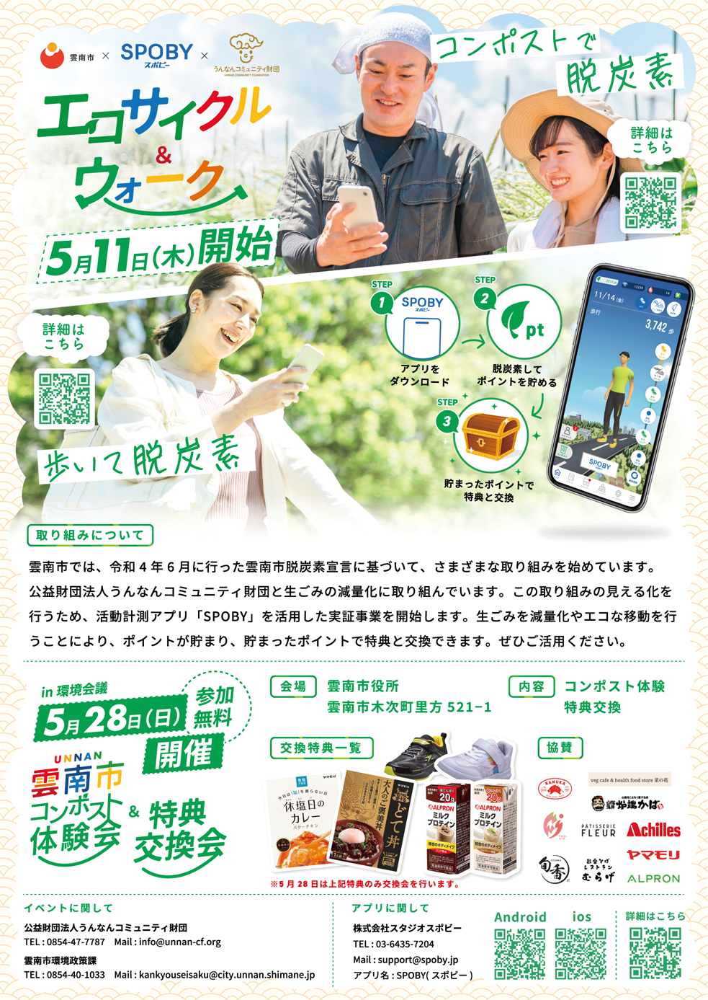

雲南市×SPOBY エコサイクル&ウォーク
制作背景・意図
- 【概要】
-
- 配置場所 : 雲南市役所/コンポスト回収場所
- サイズ : A2
- ポスター内容 : 雲南市でSPOBYアプリを活用した「コンポスト・歩行/自転車移動による脱炭素」実施について/雲南市コンポストインベントについて/特典交換会について
- 必須情報 : イベントについて/体験会・特典交換会情報について/コンポスト・移動による脱炭素について
- アプリ（SPOBY）について :
「SPOBY」は人の活動による脱炭素・健康増進を実現するアプリです。ユーザーはアプリを利用して活動を行うことでポイントを獲得でき、貯まったポイントはアプリ内に掲載されている様々なリワードと頑張ったご褒美として交換・獲得することができます。
- 【制作目的】
-
- 雲南市にて、脱炭素・健康増進の取り組みを行うアプリ「SPOBY」を活用した市民向けイベントが実施されることから、イベント内容と参加方法を周知することを目的として制作しました。本イベントでは、SPOBYの脱炭素機能の一つである「コンポスト」を活用した体験会が雲南市主催のもと実施されるため、その取り組み内容や参加メリットを分かりやすく伝える役割を担っています。また、体験会への参加によってコンポストを実施することで、アプリ内ポイントが付与され、特典と交換できる仕組みを訴求することで、市民が楽しみながら脱炭素活動に参加できるイベントであることを周知することも目的としています。
- 【制作時に重視したポイント】
-
- 行政主催のイベント告知ポスターであることから、「何のイベントか」「何を体験できるのか」「参加すると何が得られるのか」が一目で理解できる情報整理を重視しました。特に、コンポスト体験と脱炭素ポイント獲得の関係性が直感的に伝わるよう、体験内容・アプリ利用・特典交換までの流れを段階的に構成しています。また、参加にあたっての日時・会場・費用（無料）といった重要情報を明確に配置し、説明を受けなくても行動に移せる設計を意識しました。
- 【デザイン上の工夫点】
-
- コンポストや脱炭素といったテーマに対して堅い印象になりすぎないよう、自然の中で行動する人物写真を中心に、親しみやすく前向きな雰囲気を意識してデザインしました。全体の配色はグリーンを基調とし、環境配慮や安心感に加え、行政施策としての信頼性が伝わるトーンにまとめています。また、雲南市との取り組みであることを視覚的に訴求するため、雲をモチーフにした模様や装飾を取り入れ、地域性が直感的に伝わるデザイン表現としています。